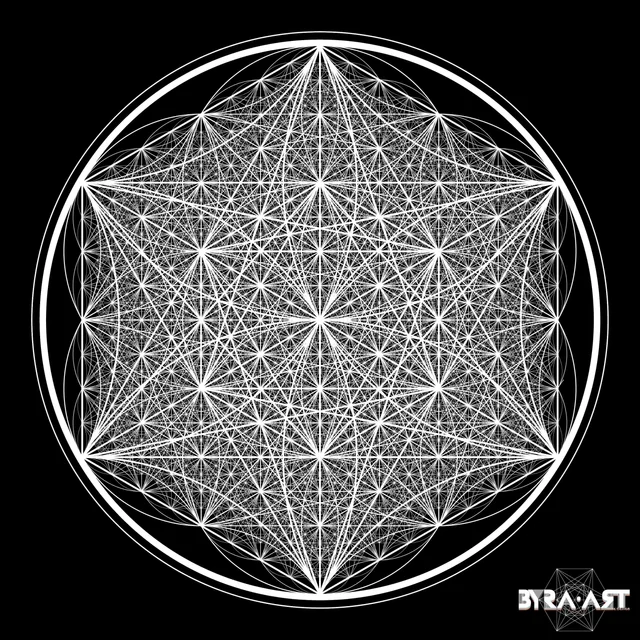

Vortex Mathematics
In the 1980s, researcher Marko Rodin discovered a novel way to arrange numbers 1 through 9 in a circular pattern. This arrangement, later developed by Randy Powell, reveals hidden mathematical circuits that demonstrate how numbers possess qualities and relationships beyond their quantitative value.
The system demonstrates two primary circuits: the doubling circuit (1→2→4→8→7→5→1) and the tripling circuit (centered on 3, 6, and 9). These circuits represent fundamental patterns of expansion and manifestation in nature.

Figure 1: Flower of Life — The geometric blueprint from which all reality emerges. Found in ancient temples across multiple civilizations.
The Number Map: A Portrait of Reality
When numbers 1-9 are arranged in a circle, hidden patterns emerge. The doubling circuit (1→2→4→8→7→5→1) represents the fundamental pattern of expansion in nature—visible in cell division, electromagnetic waves, and crystal formation. The tripling circuit (3→6→9) that so fascinated Tesla represents the creative principle itself.
Figure 2: Metatron's Cube — Contains all five Platonic solids, representing the geometric foundation of physical reality.
The doubling circuit represents a closed mathematical system that governs how energy expands and manifests. You can verify this pattern directly using any calculator through the division by seven sequence.
The sequence 1-4-2-8-5-7 repeats infinitely, demonstrating that mathematical patterns possess inherent stability and predictability that transcends scale. This same ordering principle structures the behavior of energy throughout the universe.
"If you only knew the magnificence of the 3, 6, and 9, you would have a key to the universe."